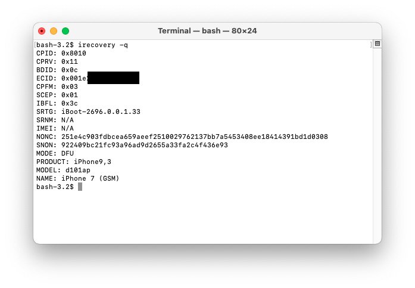

First Steps
Most tools are designed to be used on macOS, however if compiled from source they may be able to run on other operating systems.
Download and compile:
tsschecker by tihmstar (modified fork by 1Conan)
irecovery by the libimobiledevice team
A tool to place your device into pwned DFU mode.
For macOS:
For Linux:
The target firmware (iOS version) which can be found here
Apple device software comes in the form of zip files with a .ipsw extension. "ipsw" is an abbreviation for iPhone/iPod/iPad (ip) and software (sw).
SHSH(2) (apticket) files
SHSH signatures are required in order to properly build img4 files that the BootROM will accept from pwned DFU mode. Unless you have them already, you can save them with tsschecker (or other public tools.)
Note: ticket version does not have to match target iBoot version.
tsschecker -d iPhoneX,X -B boardconfig -e ECID -l -s
If you do not know your ECID or boardconfig, connect the device in DFU or Recovery mode and execute:
irecovery -q
which will give an output similar to this: 
After the string "ECID: " will be the device's ECID in hex, and after the string "MODEL: " will be the device's boardconfig (d101ap in this case).
Next, extract the IM4M from your SHSH(2) Blob using this script. This file will be critical for signing the bootchain later on:
python3 extract_im4m.py *.shsh2 IM4M